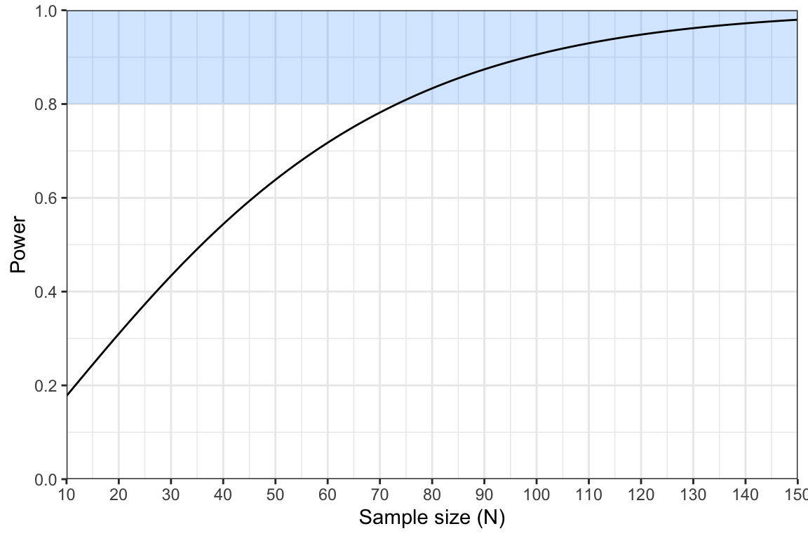
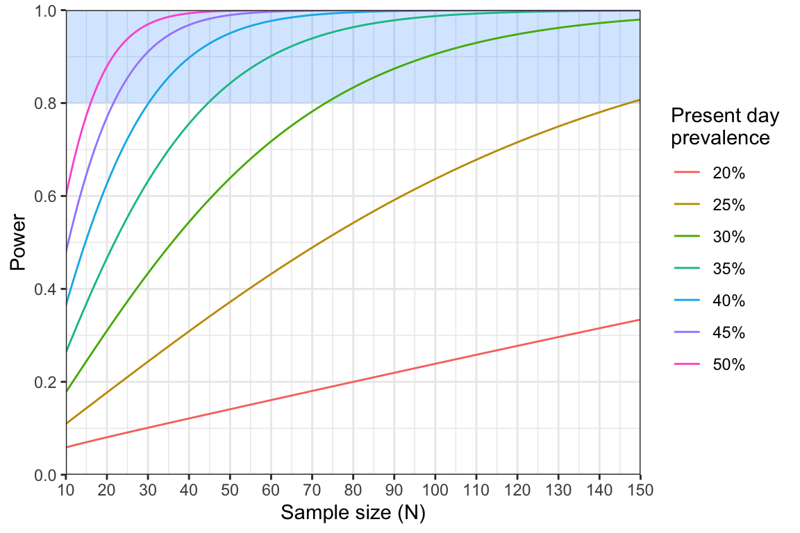

Module 3: Hypothesis Testing and Power
Introduction
Welcome to Module 3: Hypothesis Testing and Power
In this module, we introduce the concept of statistical power and demonstrate its connection to null hypothesis testing. In many studies within MMS, we aim to test specific hypotheses. For instance: Has the prevalence of drug resistance mutations increased over the past five years? Are certain genetic variants linked to gender or occupation? Does treatment efficacy vary based on genetic markers? Each of these questions can be framed as a null hypothesis test. This leads us to a crucial question: given that a real effect exists, how likely is it that our study design will detect it? This is what we mean by statistical power. We’ll explore these concepts using two examples: comparing drug resistance prevalence between two time points and detecting rare genetic variants
Learning Outcomes
By the end of this tutorial, you will be able to:
- Define key terms related to null hypothesis testing.
- Use a test statistic to decide whether or not to reject a null hypothesis.
- Perform power analysis under two different statistical tests.
- Interpret power curves.
- Use minimum sample size tables.
Disclaimer: The scenarios in this document are entirely fictitious. While real place names are used, the data itself is artificial and designed for teaching purposes only. It does not necessarily represent the real epidemiological situation in these locations.
Quiz on hypothesis testing and power
Well done on completing this quiz! We will now put some of these ideas into practice.
Testing for changes in drug resistance prevalence over time
You are a local health minister working in the Gombe region of Nigeria. You are concerned that the prevalence of antimalarial resistance might be increasing in Gombe city, the capital city of Gombe state. A study conducted three years ago found that the prevalence of pfmdr1 N86Y mutations was 15%. You plan to conduct a new survey to establish if there has been a change in the prevalence of N86Y mutations over this time.
We will take the previous estimate of \(p_0=0.15\) three years ago to be exactly correct. In other words, we will compare against this exact value, rather than also considering uncertainty in \(p_0\). For this reason, the appropriate statistical test is the one-sample z-test for proportions.
For our power analysis, we need to assume a known value for the current prevalence, \(p_1\). We will be pessimistic and assume that the prevalence has doubled over the three year period to \(p_1=0.30\). We plan to use a sample size of \(N=150\) in the new study.
Given these values, we can calculate the expected value for our test statistic using the following formula: \[ \mu_{\text{alt}} = \frac{|p_1 - p_0|}{\sqrt{\frac{p_1(1-p_1)}{N}}} \] Note that the vertical lines around \(|p_1 - p_0|\) mean we should take the absolute value of the difference. This ensures that \(\mu_{\text{alt}}\) is always positive.
Complete the following R code to calculate the value of \(\mu_{\text{alt}}\):
# input parameters
p0 <-
p1 <-
N <-
# calculate absolute value of difference in prevalence
p_diff <- abs(p1 - p0)
# calculate the standard error
SE <- sqrt(p1*(1 - p1) / N)
# calculate mu_alt
mu_alt <-
print(mu_alt)# input parameters
p0 <- 0.15
p1 <- 0.3
N <- 150
# calculate absolute value of difference in prevalence
p_diff <- abs(p1 - p0)
# calculate the standard error
SE <- sqrt(p1*(1 - p1) / N)
# calculate mu_alt
mu_alt <- p_diff / SE
print(mu_alt)Click to see the answer
You should find that \(\mu_{\text{alt}} = 4.00\).
We can use the value of \(\mu_{\text{alt}}\) to tell us our power. The formula for power under the z-test is:
\[ P_{ow} = 1 - \phi(z_{1-\alpha/2} - \mu_{\text{alt}}) \]
In this formula, \(\phi(x)\) refers to the area under the curve of a standard normal distribution up to the point \(x\). There is no simple way of calculating this value, but we can obtain it easily in R using the pnorm() function. As in previous activities, the value \(z_{1 - \alpha/2}\) refers to the critical value of the normal distribution at a significance level \(\alpha\) (two-tailed), which is approximately equal to 1.96.
Complete the following R code to calculate the power under the planned study design:
# calculate power using the known value of mu_alt
z <- 1.96
power <- # hint, you will need to use the pnorm() function here
print(power)# calculate power using the known value of mu_alt
z <- 1.96
power <- 1 - pnorm(z - mu_alt)
print(power)Click to see the answer
You should find that \(P_{\text{ow}} = 0.98\).
Using power curves
Our current study design has 98% power. We normally aim for at least 80% power, meaning this study is adequately powered. In fact, we could argue that it is over-powered, meaning we could get away with using fewer samples and still have a good chance of detecting a real effect.
We can use power curves to explore how power changes as a function of variables such as sample size. In the plot below, the region with at least 80% power is shaded in blue.

This power analysis indicates that we may not need to sequence 150 samples after all. However, it did make the rather pessimistic assumption that prevalence has doubled from 15% to 30% over the three year period. It would be useful to repeat this analysis making different assumptions about the prevalence. One way to do this is via a series of power curves:

We can see that power is a long way from 80% under a sample size of 74 if we make even a slight change in our assumptions down to 25% or 20% prevalence. So while we have adequate power to detect a doubling of the prevalence, there may still be large changes in the prevalence of N86Y mutations that we would fail to detect under this design.
Sample size tables
Power curves are useful for exploring the exact relationship between sample size and power. However, it can be fiddly to read values off the curve to find the exact point at which it crosses the 80% threshold. This is where sample size formulae and sample size tables come in handy.
Recall that power under the z-test was given by \[ P_{ow} = 1 - \phi\left(z_{1-\alpha/2} - \frac{|p_1 - p_0|}{\sqrt{\frac{p_1(1-p_1)}{N}}} \right) \] In an earlier module, we rearranged the formula for the Wald interval to arrive at a new formula in terms of the sample size \(N\). Here, we want to do exactly the same thing, just with a more complicated formula! We won’t walk through the steps of this derivation, but take my word for it that this can be rearranged to produce: \[ N = (z_{1 - \alpha/2} + z_{1 - \beta})^2\frac{p_1(1 - p_1)}{(p_1 - p_0)^2} \] The only unfamiliar term here is \(z_{1 - \beta}\), which is the area under the curve of the standard normal distribution up to the value \(1 - \beta\), and \(\beta\) is one minus our power (typically \(\beta = 0.2\)).
The following R code implements this formula. Have a play around with this code. Try changing the value of p2 and see what happens. Do you obtain the value \(N=74\) when \(p_2=0.3\), like we found from the power curve? What happens to the sample size as the prevalence gets closer to 15%?
# define our assumed values
p0 <- 0.15
p1 <- 0.30
# define the two z parameters
z_alpha <- 1.96
z_beta <- qnorm(0.8)
# calculate the minimum sample size
(z_alpha + z_beta)^2 * p1*(1 - p1) / (p1 - p0)^2One of the nice things about sample size formulae is that we can use them to produce tables of minimum sample sizes. Table 1 shows the minimum sample size required to achieve 80% power under different assumptions about the prevalence of N86Y mutations:
| Assumed present-day prevalence of N86Y mutation | Sample size |
|---|---|
| 20% | 503 |
| 25% | 148 |
| 30% | 74 |
| 35% | 45 |
| 40% | 31 |
| 45% | 22 |
| 50% | 17 |
Table 1: minimum sample sizes under various assumptions about present-day prevalence |
This allows us to scan across values and work out what is reasonable, but also achievable.
Reflection:
What sample size would you opt for in this case? What factors could help you decide on a reasonable assumption for the present day prevalence? What factors could help constrain which sample sizes are feasible?
Detecting rare variants
Following your success of your N86Y study in Gombe city, you have been asked to carry out a new study looking into pfk13 mutations.
You are planning a study to look for the presence of validated pfk13 mutations. You are not interested in estimating the prevalence of mutations, rather you want to know if any of these mutations are present in your population. You will test people for malaria as they present to a local health facility, and a subset of dried blood spots from malaria-positive patients will be sent away for sequencing. You only have the resources to sequence 100 samples, and you want to know if it is worth conducting a study with such a small sample size.
Background
You have been recruited by the National Malaria Control Programme (NMCP) of the Democratic Republic of the Congo (DRC) to assist with study design. The NMCP is concerned about the potential spread of mutations that confer partial resistance to the drug combination Sulfadoxine-Pyrimethamine (SP). The dhps K540E mutation, known to be associated with high level SP resistance when found alongside other common mutations, has recently been found at high prevalence (72%) in neighbouring Uganda. In the last few weeks there have been anecdotal reports of SP failure in Rutshuru town, which lies in Eastern DRC close to the border with Uganda. The NMCP is concerned about possible flow of drug resistant parasites over the border.
The NMCP plans to conduct a cross-sectional study to estimate the prevalence of the dhps K540E mutation within Rutshuru town. Your job is to work out the appropriate sample size for this study.
Results of a pilot study
A pilot study has already been conducted in Rutshuru. This pilot study included 100 participants chosen at random from households within the town, who were tested for malaria via rapid diagnostic test (RDT). 23 people tested positive for malaria and these samples were sent away for genetic sequencing. 19 samples were successfully sequenced, of which 5 were positive for the K540E mutation.
Recall that we can use the following formula to calculate a 95% confidence interval on our prevalence estimate:
\[ \hat{p} \pm z_{1-\alpha/2}\sqrt{\frac{\hat{p}(1-\hat{p})}{N}} \] Complete the following R code to compute this interval:
# estimate the prevalence
x <-
N <-
p <- x / N
# calculate the margin of error (MOE)
z <- 1.96
MOE <- z*sqrt(p*(1 - p) / N)
# compute lower and upper 95% limits
p - MOE
p + MOE# estimate the prevalence
x <- 5
N <- 19
p <- x / N
# calculate the margin of error (MOE)
z <- 1.96
MOE <- z*sqrt(p*(1 - p) / N)
# compute lower and upper 95% limits
CI_lower <- p - MOE
CI_upper <- p + MOE
c(CI_lower, CI_upper)Click to see the answer
The 95% interval goes from 0.065 to 0.461, or in other words from 6.5% to 46.1%.
The 95% confidence interval reveals considerable uncertainty regarding the prevalence of K540E mutations. While our best estimate is 26.3%, the plausible range spans from 6.5% to 46.1%, which the NMCP finds too broad to be practically useful. They plan to conduct a follow-up study to obtain a more precise estimate.
Calculating the appropriate sample size
When designing the new study we will calculate the exact sample size needed to achieve a target margin of error (MOE). We can do this by rearranging the MOE formula to isolate the sample size (N) on the left side. If you’re comfortable with the math and would like to see the steps, follow along below. Otherwise, feel free to skip to Step 3 for the final formula.
Step 1: Write down the formula for the MOE
We will use the mathematical symbol \(m\) for the MOE:
\[ m = z_{1-\alpha/2}\sqrt{\frac{p(1-p)}{N}} \] Step 2: Square both sides
\[ m^2 = z_{1-\alpha/2}^2 \frac{p(1-p)}{N} \] Step 3: Multiply both sides by \(N\) and divide by \(m^2\)
\[ N = z_{1-\alpha/2}^2 \frac{p(1-p)}{m^2} \]
Now we have a new formula that we can use to determine the appropriate sample size based on assumed values of \(p\) and \(m\). Our reason for working through the derivation of this formula is to show how closely connected it is to the formula for the confidence interval. In fact, it is the same mathematical expression, just “reverse engineered” to be in terms of \(N\).
Now we need to decide what values to assume for \(p\) and \(m\).
For the sake of this tutorial we will assume a value of \(p=0.26\) to match the pilot data. The NMCP has decided that a MOE of 5% is acceptable. Complete the following R code to compute the resulting sample size:
# enter assumed values
p <-
m <-
# calculate the raw sample size
z <- 1.96
z^2*p*(1 - p) / m^2# enter assumed values
p <- 0.26
m <- 0.05
# calculate the raw sample size
z <- 1.96
z^2*p*(1 - p) / m^2Click to see the answer
We obtain a value of 295.65. We would round this up to \(N=296\) to give a whole number.
One of the nice things about sample size determination is that we can easily check that our calculation is correct. Optional exercise: Try entering the values \(p=0.26\) and \(N=296\) into the 95% CI formula that we used in the pilot data analysis. If our calculations were correct, you should find that the resulting MOE is very close to 5%.
# Copy over the Wald formula code from the previous section, and edit to reflect
# the new assumed prevalence of 26% and sample size of 296# enter assumed values
p <- 0.26
N <- 296
# calculate the margin of error (MOE)
z <- 1.96
z*sqrt(p*(1 - p) / N)Click to see the answer
You should obtain a margin of error of 4.997%, which is very close to the target 5%. Notice that our MOE will always be equal or smaller than the target MOE. This is because we rounded the sample size up from 295.65 to 296.
Buffering
Buffering refers to increasing a sample size to allow for drop-out (loss of samples). Some ways that drop-out can occur are through:
- Participants withdrawing consent
- Participants dying or leaving the area
- Samples being lost during transportation
- Samples becoming contaminated
- Samples failing amplification or sequencing resulting in a lack of genetic data
- Data being lost due to data storage errors
We cannot completely eliminate the risk of drop-out, but by buffering sample sizes we can at least be robust to it. If we expect a proportion \(d\) of samples to be lost, then the formula for buffered sample size is:
\[ N_{\text{buffered}} = \frac{N_{\text{original}}}{1 - d} \]
Through consulting with lab technicians and the study team, you estimate that 10% of samples may be lost to drop-out. Complete the following R code to come up with a buffered sample size:
# enter sample size and estimated drop-out
N <- 296
d <- 0.1
# calculate the buffered sample size
N_buffered <-
print(N_buffered)# enter sample size and estimated drop-out
N <- 296
d <- 0.1
# calculate the buffered sample size
N_buffered <- N / (1 - d)
print(N_buffered)Click to see the answer
You should obtain a buffered sample size of 328.89, which we would round up to 329.
Accounting for positive fraction
So far, we have focused on working out how many confirmed malaria cases we need in our study. However, recall that this will be a cross-sectional study with individuals being sampled at random from households within Rutshuru town. Many of the individuals tested will be negative for malaria. It may be useful for the study team to know how many individuals they need to test as part of this study, which may be considerably higher than the number of confirmed malaria cases.
The NMCP estimates that 25% of the population of Rutshuru will be positive for malaria by RDT. We can use the same buffering formula as before, but now using the positive fraction (\(f\)) to inflate our sample size:
\[ N_{\text{test}} = \frac{N_{\text{confirmed}}}{f} \]
Note that this is in addition to buffering for drop-out. We can imagine a chain of events where we can lose samples at each stage; we want to ensure that in the end we still have enough samples remaining.
Complete the following R code to work out the number of people we will need to test to achieve the final target sample size:
# enter buffered sample size and positive fraction
N <-
f <-
# calculate the testing sample size
N_test <-
print(N_test)# enter buffered sample size and positive fraction
N <- 329
f <- 0.25
# calculate the testing sample size
N_test <- N / f
print(N_test)Click to see the answer
You should find that 1316 people need to be tested.
You have now completed your study design exercise. Your recommendation to the NMCP is as follows:
Assuming a prevalence of K540E mutations of 26% based on pilot data, a sample size of 329 confirmed malaria cases will be needed to estimate prevalence to within 5% margin of error. This number is buffered to allow for 10% drop-out.
Assuming that malaria prevalence is 25% by RDT in Rutshuru town, this translates to 1316 individuals who will need to be tested in the cross-sectional study design.
Bonus questions
The study design above is based on strong statistical principles. However, it is worth testing how robust these numbers are to changes in our assumptions.
Under the chosen sample size of 296 (after drop-out), what would be your margin of error under the worst case scenario that the true prevalence of the K540E mutation was actually 50%?
# enter assumed values
p <- 0.5
N <- 296
# calculate the margin of error (MOE)
z <- 1.96
z*sqrt(p*(1 - p) / N)Click to see the answer
The MOE would increase to 5.7% in the most pessimistic scenario.
We estimated that 1316 people will need to be tested based on an assumed 25% prevalence of malaria. But what if malaria prevalence is actually only 15% in Rutshuru town? What would be your expected final sample size, and what would be your resulting MOE?
# enter assumed values
p <- 0.26
N_test <- 1316
# work out final sample size assuming 15% prevalence and 10% drop-out
N <- round(N_test * 0.15 * 0.9)
print(N)
# calculate the margin of error (MOE)
z <- 1.96
z*sqrt(p*(1 - p) / N)Click to see the answer
Assuming 15% prevalence and 10% drop-out, our final sample size of successfully sequenced malaria cases would be around 178. This would result in a MOE of 6.4%.